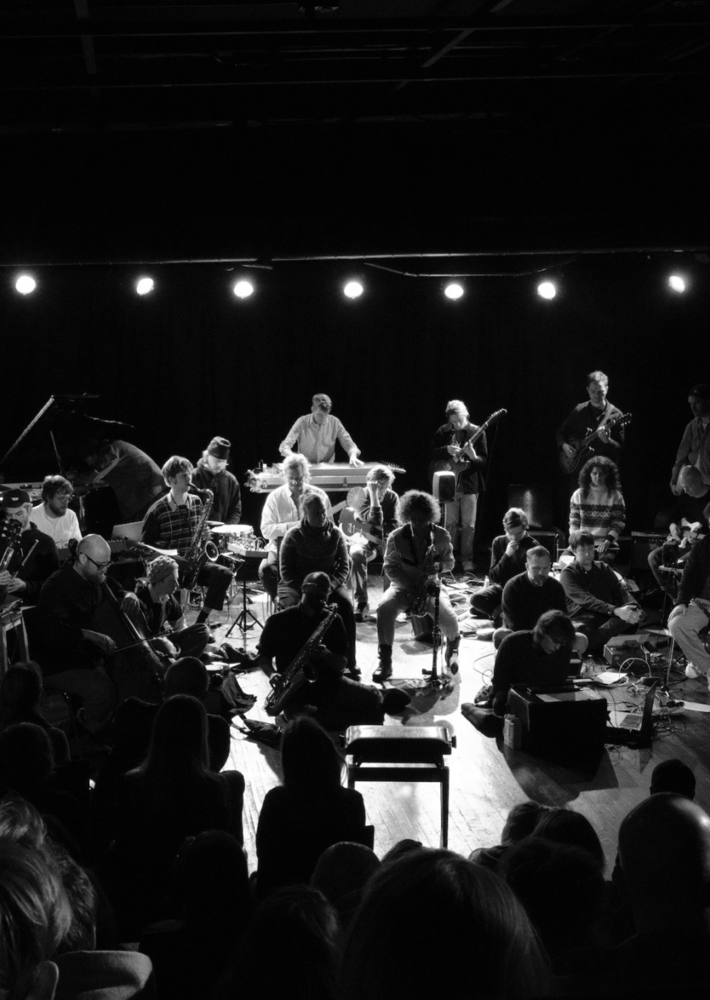

A MAJOR CELEBRATION is a 45 minute composition by Aar & Dag and Polychrome. The piece is laid out as an open score on 30 unique instruction cards - two of which are included in the cover for the tape. The composition was performed in 3 iterations during 3 concerts by 33 artists at Bådehuset, Copenhagen on July 1st, 2023. The performances were recorded and layered in a triple exposure; 45 + 45 + 45 = 45 minutes.
Released December 7, 2024
JONATHAN AARDESTRUP · FRANCESCO BIGONI · TAUS BREGNHØJ-OLESEN · CALUM BUILDER · ELIOT CARDINAUX · IGNACIO CÓRDOBA · JASON DUNGAN · MARIA DYBBROE · ODA DYRNES · JONAS ENGEL · ANTHONY FAROUX · MADS FORSBY · NICOLAI GERSTENFELDT · CAROLYN GOODWIN · FELIA GRAM-HANSSEN · MARK IBSGAARD GREGERSEN · NIKOLA JAN GROSS · HENRIETTE GROTH · CLAUS HAXHOLM · ANJA JACOBSEN · TYGE JESSEN · ANNE GRY · FRIIS KRISTENSEN · HEINE THORHAUGE MATHIASEN · ANDERS LAUGE MELDGAARD · MICHAEL MØRKHOLT · JONAS OLESEN · ANDREAS PALLISGAARD · KRISTIAN PAULSEN · VINCENT YUEN RUIZ · JENNY GRAF SHEPPARD · JONAS STAMPE · IDA NØRBY SØRENSEN · ADAM WOER
Listen on Bandcamp